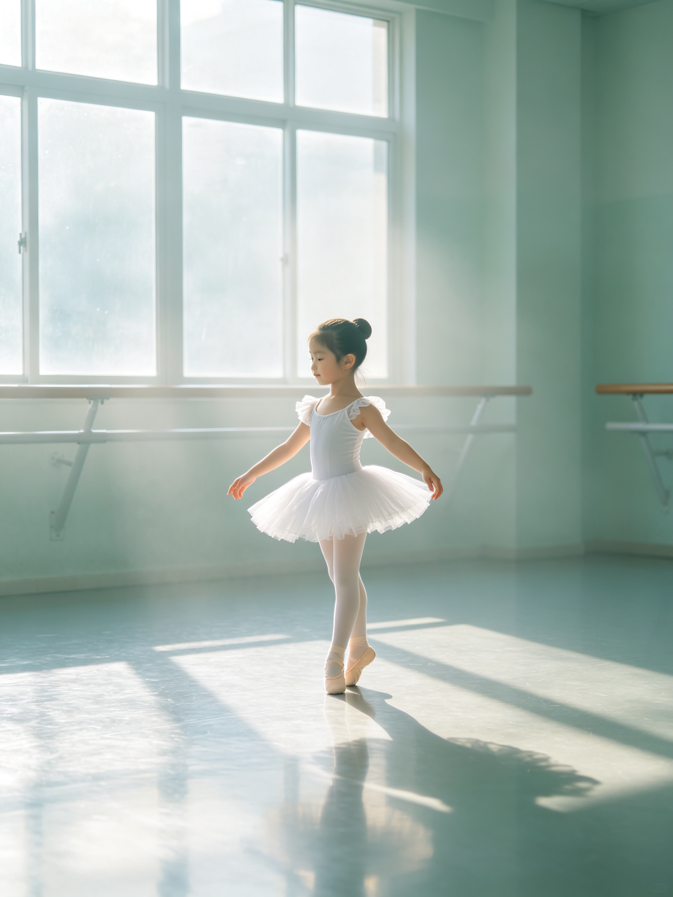
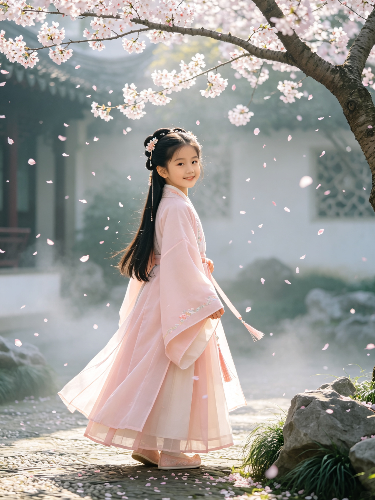

0
初生如夏
出生 · 十月深秋
十月十二日，你来到人间。护士说你是产房里最安静的小姑娘，月光透过纱帘照在你脸上。妈妈忽然觉得，这一生，都会记得这个夜晚。
献给我们的女儿
成 长 时 光 录
二〇〇六 — 二〇二四 · 成 都
十八年前的秋天，你来了。护士说你是产房里最安静的小姑娘，像一片轻轻落下的叶子。
我们曾以为，是我们在呵护你长大。后来才明白，是你教会了我们，什么是不慌不忙的温柔。
这一条时间线里，藏着我们最珍贵的十八年：每一次转身，每一回回眸，每一个安静而明亮的瞬间。
女儿，愿你一生清澈，像你名字里的那个夏天。
—— 爱你的爸爸妈妈
0 — 1 岁 · 你来到人间
出生 · 十月深秋
十月十二日，你来到人间。护士说你是产房里最安静的小姑娘，月光透过纱帘照在你脸上。妈妈忽然觉得，这一生，都会记得这个夜晚。
周岁 · 扶着栏杆站起来
你扶着床栏杆站起来的样子，像一棵刚发芽的小树。那天你对着我们笑了很久，好像在说：“看，我做到了。”
2 — 3 岁 · 世界开始变大
两岁 · 院子里的风
院子里的蝴蝶总是比你飞得快，可你从来不气馁。裙摆扬起，笑声落满整个院子，连阳光都跟着你打转。
三岁 · 与树对话
三岁，你开始“读”绘本，其实多半是看图编故事。你指着窗外的树说：“树在和我说话。”——后来我们才知道，那是风。
4 — 6 岁 · 风一样的日子
四岁 · 第一堂舞蹈课

舞蹈室的第一节课，你踮着脚站不稳，却执意不肯扶着把杆。老师说，这孩子骨子里有股不服输的劲儿。四岁的你，已经有了自己的坚持。
五岁 · 把愿望寄给风
你在草地上对着蒲公英许愿，鼓起腮帮吹得满天都是，说要把愿望寄给风。后来我们问愿望是什么，你说：“秘密。”
六岁 · 小学一年级
九月，你背着新书包去上学，走几步就回头看看我们。秋日的晨光落下来，你眼里的光，比它还要亮。
7 — 12 岁 · 世界在脚下展开
七岁 · 学古筝
你开始学古筝，小小的手按不住琴弦，却坚持每天练。第一次完整弹完《渔舟唱晚》时，你高兴得在房间里转圈，裙摆像水波一样荡开。
八岁 · 山谷写生
夏令营里，你站在画架前画山谷。老师说你的画“很安静”。也许是因为，你把风、云、溪水，都装进了心里。
九岁 · 学游泳
你学游泳比谁都慢，却比谁都认真。当你能独自游过半个泳池时，你举着浮板朝我们挥手，笑得像夏日的水光。
十岁 · 成长礼

十岁成长礼，你穿上淡粉色的汉服，站在花树下。花瓣落下来，你回眸的那一瞬间，我们都觉得，时间走得真快。
十一岁 · 图书馆靠窗的座位
你开始有自己的小世界。图书馆靠窗的位置是你的专属座，阳光把书页照得发亮，你托着腮，一坐就是一个下午。
十二岁 · 小学毕业
小学毕业那天，你在操场上转圈，裙摆扬起，手里攥着学士帽。你说毕业就是“从一个教室，换到另一个教室”。我们却知道，你正在长大。
13 — 18 岁 · 奔赴各自的远方
十三岁 · 初中
你骑着单车穿过校园的林荫道，车筐里放着几本书，风吹起头发。十三岁，你开始习惯独自出发，也习惯把心事写进日记。
十四岁 · 看日落
你爱上了看日落。天台上，你抱膝坐着，晚霞把天空染成粉紫色。你没有说话，但我们知道，你在想一些很远的事情。
十五岁 · 中考结束
中考结束那天，你举着冰淇淋站在街角，笑得没心没肺。那个夏天特别长，你学会了骑电动车，学会了做柠檬茶，也学会了把烦恼写进歌里。
十六岁 · 辩论赛
校园辩论赛，你站在讲台前，不疾不徐。台下掌声响起时，你才露出一点不好意思的笑。十六岁，你开始相信，声音可以被听见。
十七岁 · 画室午后
画室的午后，你专注地画一束花。颜料在画布上晕开，你说画画是“把看到的美好，再保存一次”。十七岁，你有了自己的语言。
十八岁 · 成年礼
十八岁，你穿着白色连衣裙站在礼堂门口，手里握着一束满天星。阳光从你身后洒过来，你微笑的样子，像你出生那晚的月光。孩子，去吧，世界很大，而你足够勇敢。
亲爱的孩子：
你出生那晚的月光，妈妈记了十八年。
这十八年，你从蹒跚学步，到独自去看世界。我们看着你的背影，从小小的一个，到越来越远、越来越坚定。
我们没有什么要嘱咐的。只想说：去做你想做的事，成为你想成为的人。累了就回家，家里永远有一盏灯。
愿你像夏天的风，自由、干净、明亮。
永远爱你的爸爸 & 妈妈
2024 年 10 月